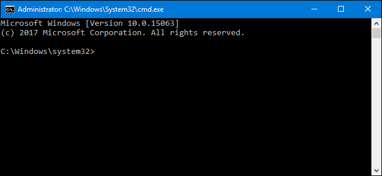
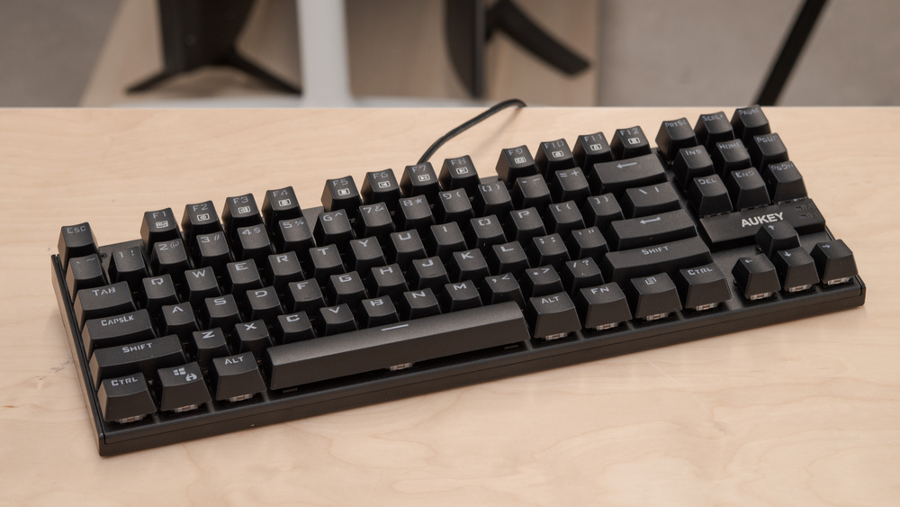
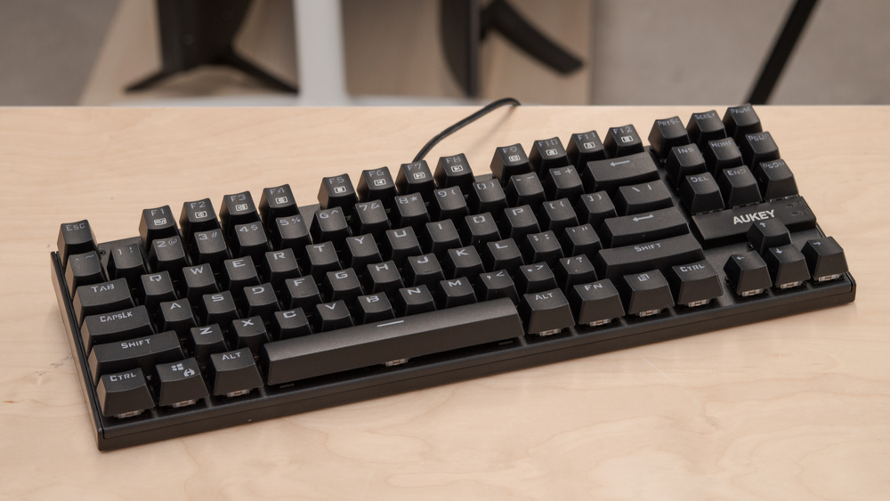

Learn more about Computer Science
Computer Science
How Can I be Well Prepared to be a Computer Science Major?
Majoing in Computer Science requires a variety of background skills. Though you can't do everything before entering college, we have a few recommendations on what to study that will give you a head start.
The first recommendation we have is to pick a programming language and run through tutorials with it on this website W3 Schools. W3 schools has hundreds of well-designed tutorials that can teach you many different programming languages.
A few of our favorites are Python, C#, and JavaScript. These three languages are extremely common currently and see a variety of uses.
Though not every Computer Science major will need it, preparing and practicing some mathematics will make your time in college go more smoothly as some of the most difficult classes I have taken have been Calculus classes.
Many universities offer different specalities with their Computer Science degree, doing research into the different options offered by your choice schools can help you decide what field you want to study.
Because it is done on computers, the keyboard will be your primary interface to your code. Learning to type quickly and accurately can improve your abilities by making typing a skill that is second nature. Is a typing course can help you learn the basics
of typing, however practice is the best teacher here.

Many systems on a computer can only be accessed through the Command Line Interface of an operating system. This is a skill that I wish I had spent more time studying before college. Unfortunately it is not an easy thing to pick up. Because of the
many differences between operating systems, finding a good place to learn is difficult, though Codeacademy.com is a place where you can start. Even a little familiarity here can help.
 While it is not knowledge based, or skill based, good equipment can help you major in Computer Science as well.
I recommend investigating your school's recommended specifications for a laptop (if you are required to bring your own), and ensure that the computer you plan to use meets those requirements. It is a good idea to purchase somewhere above those
requirements as well. This can ensure the likelihood of your computer lasting your college career.

Since typing is such a part of Computer Science, I also recommend finding a good keyboard. Most laptops do not feature a solid, comfortable built-in keyboard. While it will work for in-class work, you will likely want something better for your room use.
More pronounced keys on an external keyboard can assist with increasing speed as you tpye, your fingers will be able to "learn" the layout better, for me, it has reduced wrist and hand strain. A good keyobard does not need to be expensive, just something you find comfortable.
While it is not knowledge based, or skill based, good equipment can help you major in Computer Science as well.
I recommend investigating your school's recommended specifications for a laptop (if you are required to bring your own), and ensure that the computer you plan to use meets those requirements. It is a good idea to purchase somewhere above those
requirements as well. This can ensure the likelihood of your computer lasting your college career.

Since typing is such a part of Computer Science, I also recommend finding a good keyboard. Most laptops do not feature a solid, comfortable built-in keyboard. While it will work for in-class work, you will likely want something better for your room use.
More pronounced keys on an external keyboard can assist with increasing speed as you tpye, your fingers will be able to "learn" the layout better, for me, it has reduced wrist and hand strain. A good keyobard does not need to be expensive, just something you find comfortable.